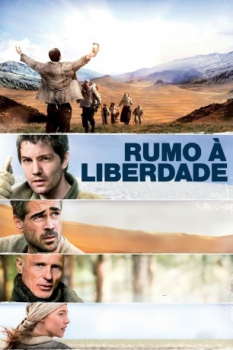

Caminho da Liberdade (2010)


Conseguir fugir foi apenas o começo.

Avaliação (TMDb):


7.0/10 (1.1K votos)
Avaliação (Usuário):
Outro Título:The Way Back
País:Poland, 133 minutos
Idiomas falados:Inglês
Gênero(s):Drama, Aventura, História
Diretor(s):Peter Weir
Codec:MPEG-2 (DVD)
Número: 854
Sinopse:
1940. Sete prisioneiros do regime de Stalin na União Soviética aproveitam a nevasca para escapar de um gulag. Mesmo com poucas chances de sobreviver e a possibilidade constante de serem recapturados, eles enfrentam as condições adversas de clima para conquistar a liberdade.
Elenco:
Colin Farrell, Ed Harris, Saoirse Ronan, Jim Sturgess, Mark Strong, Dejan Angelov, Dragoș Bucur, Sally Brunski, Alexandru Potocean, Gustaf Skarsgård
Tipo de mídia: DVD5,
Legendas: Português
Alugado: Não
Tela: 2.35:1